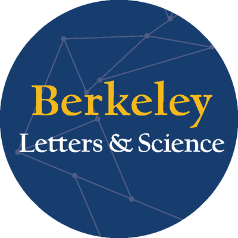
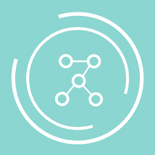
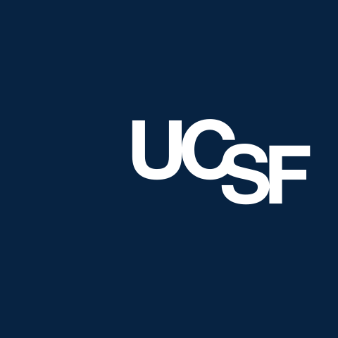
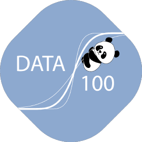

Hi, I'm Henry Hong, Software Engineer and ML Researcher at UC Berkeley

I'm a senior at UC Berkeley studying computer science and data science. At Berkeley, I'm a teaching assistant for Data 102, and I served as President of the Data Science Society through my junior year. I did machine learning research at Berkeley Artificial Intelligence Research (BAIR), where I co-authored the Speech World Model, accepted to ICLR 2026, and I've interned twice as a Software Development Engineer at Amazon. In my free time, I love playing instruments (piano and sax), reading, and exploring museums.
Timeline
An overview of my college journey
Scroll to explore
-
Fall 2023
Started Undergraduate Studies
Began B.A. in Computer Science and Data Science at UC Berkeley
-

Dec. 2023 – May 2024
Data Science Researcher
Developed predictive models for alumni donation likelihood and forecasting at UC Berkeley College of Letters and Science
-
Spring 2024
Data Science DeCal Director
Facilitate Data 198: Intro to Real World Data Science, teaching the data science lifecycle through hands-on projects

-
Summer 2024
Data Science Consultant
Built financial forecasting models using ARIMA and LSTMs at Universal Health Services
-
Fall 2024
Computational Neuroscience Researcher
Conducted research at UCSF to optimize seizure detection models for personalized clinical care

-

Spring 2025 – Spring 2026
Data 100 Course Staff
Taught and supported 1,000+ students through sections, exam prep, and lab authoring in UC Berkeley's flagship data science course
-
Summer 2025
Amazon SDE Intern
Built a multi-agent pipeline on AWS Bedrock to detect anomalous tax rates in 10M+ invoices/year, preventing $2.27M in overcharges
-
Jul. – Dec. 2025
ML Researcher, BAIR Speech Lab
Co-authored the Speech World Model (accepted to ICLR 2026), a causal-graph framework unifying speech understanding and reasoning
-
Dec. 2025 – May 2026
President, Data Science Society
Led Berkeley's premier data science organization of 100+ members and organized the 7th Annual Datathon for 500+ participants
-
Summer 2026
Amazon SDE Intern
Built an interactive AI coding assistant, selected for production deployment, converting financial SOP steps into review-ready automation units
-
Aug. 2026 – Present
Teaching Assistant
Teaching 300+ students in Data 102: Data, Inference, and Decisions, and hosting weekly discussions and labs